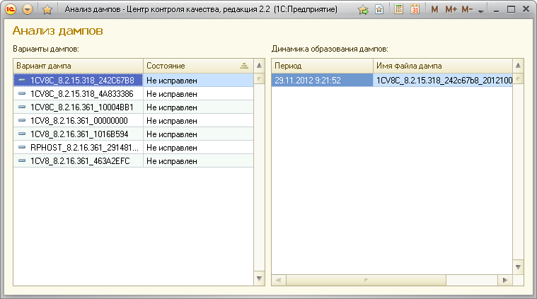

Увидеть статистику дампов, зарегистрированных ЦКК для данного рабочего сервера, можно, перейдя по ссылке в окне рекомендации для контрольной процедуры.

При нажатии на ссылку открывается форма, состоящая из двух колонок. В левой колонке показывается список вариантов дампов. Каждый вариант дампа соответствует определённой ошибке. Разные варианты дампов соответствуют разным ошибкам. В правой колонке для каждого варианта дампов показывается список соответствующих файлов дампов, найденных ЦКК при работе контрольной процедуры. Каждый вариант дампов может быть представлен одним или более файлом дампа.
